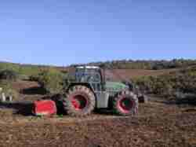

|
|
* Le terrain est d'abord débarrassé des arbres brûlés et de la végétation souvent dense et épineuse qui l'a envahi depuis, afin de faciliter le travail des bénévoles.

* Un
travail de sous solage est ensuite réalisé par un puissant
engin, qui ameublit la terre le long de sillons parallèles de 20
cm de large et 80 cm de profondeur, espacés de 1.5 m, le long
desquels seront plantés les arbres.
Cette
étape est essentielle dans le succès de la reprise des arbres,
car elle facilite la pénétration des jeunes racines, et de
la pluie jusqu'au niveau racinaire.
Elle
facilite aussi la vie des bénévoles qui devront creuser les
trous pour planter!
* Ces deux premières étapes sont sous traitées à des professionnels.


* L'étape suivante consiste à repérer l'emplacement des arbres par la pose d'un piquet en bois. Ceci est réalisé par des membres de l'association, la veille des journées de plantation. Le but étant d'obtenir un couvert dense qui doit éliminer le sous bois héliophile très combustible, la densité de plantation est forte, ce qui correspond à environ un plant tous les 1,5 m. Les arbres seront plantés en quinconce d'une rangée à l'autre.


* Le
terrain est alors prêt pour accueillir les planteurs bénévoles.